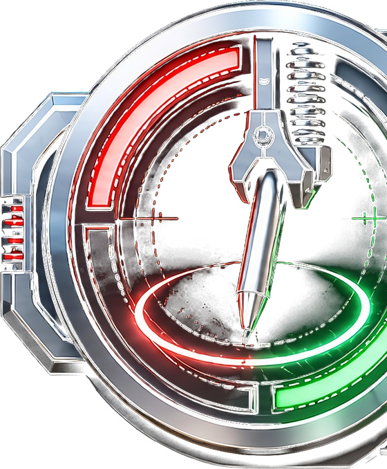

Willkommen im Freizeitmodus. Zeichnen Sie einen Kreis. Einen ausreichenden Kreis.
Zeichnen Sie einen Kreis.
Akzeptiert: 90–96%. Zu perfekt: verdächtig.
--%
Klicken oder tippen und ziehen.
Die Anlage wartet auf Ihre geometrische Rechtfertigung.
Möglicherweise benötigen Sie Unterstützung.
Dies ist ein Kreis. Versuchen Sie, etwas Ähnliches zu erzeugen.
Rundheitsprotokoll bestanden.
Die Anlage ist widerwillig zufrieden. Koordinatenfreigabe erteilt. Danke fürs Spielen!
N 49° XX.XXX E 012° XX.XXX
Bonusinhalt freigeschaltet: Hinter den Kulissen
Die Anlage hat Zugriff auf irrelevante, aber emotional wertvolle Zusatzdaten gewährt: Wut beim Coden, spontane Playtests und die Frage: „Hey Amy? Kannst du das mal testen?“
Dieses Video ist komplett optional und enthält keine weiteren Informationen zum Finden des Caches. Wirklich nicht.
Sie dürfen das Protokoll erneut starten. Dies wird nichts freischalten. Die Anlage wollte es nur erwähnen.